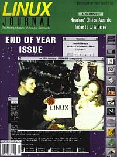

Shutdown Archive web server
Search:
Linux Journal
Issue #32/December 1996

Features
Lurking with PGP
by Michael K. Johnson
In order to use PGP to verify the origin of e-mail messages, you really need a little bit of background. Don't worry, this won't hurt a bit...
Linux Journal
Archives
A complete listing of articles from issues 1 through 31.
1996 Readers' Choice Awards
by Gena Shurtleff
Linux Journal
Readers rank their favorite Linux-related products.
News and Articles
Pagesat High Speed News
by Rich Myers
V—A free C++ GUI Framework for X
by Bruce E. Wampler, Ph.D.
A Brief Introduction to XTide
by David Flater
Columns
Letters to the Editor
From the Editor
Stop the Presses
Novice-to-Novice
A Beginner's Guide to Compiling Source Code
Take Command
What is dd?
Best of Technical Support
Linux Means Business
IMEC/NIT
New Products
Book Review
Linux SECRETS
Product Review
The OpenLook and XView CD-ROM
Product Review
Running Linux Companion CD-ROM
Book Review
Linux Kernel Internals
Directories & References
Consultants Directory
Archive Index
Shutdown Archive web server
Search:
Copyright © 1994 - 2018
Linux Journal
. All rights reserved.